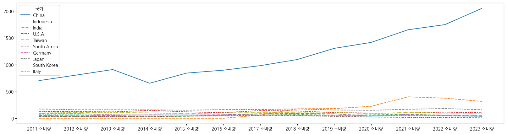
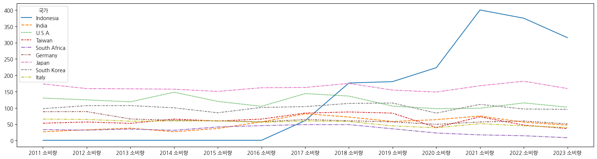
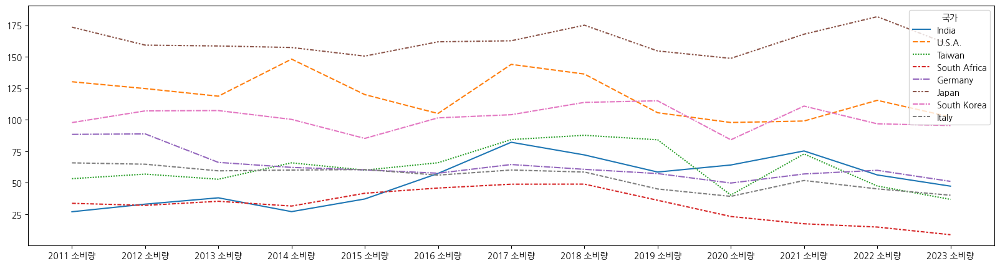

2024년 12회 산업통상자원부 공공데이터 활용 아이디어 공모전 참가 기록.(니켈기준 Plot짜보기)
개요
2024년 12회 산업통상자원부 공공데이터 활용 아이디어 공모전 참가해보기로 함
https://datacontest.kr/apply/applyAdd/3
각자 광물 하나씩 담당해서 러프하게 보고서 Plot짜보기
내용정리
지난 회의정리
국제거래 관련 데이터는 UN Comtrade database 활용하기
아래 4개 광물에 대해 분석 진행하고, HSCODE기준 적용
리튬 : 산화/수산화리튬(282520), 탄산리튬(283691)
코발트 : 산화/수산화코발트(282200), 황산코발트(283329)
망간 : 이산화망간(850610)
니켈 : 산화/수산화니켈(282540), 황산니켈(283324)
각자 광물을 1~2개 담당해서 공모전 보고서 양식에 맞게 고민해보기
분석 배경
어떤 Feature와 모델 사용
기대효과
회의내용에 대한 Self고찰 및 아이디어 Develope
기존에 니켈에 대해 분석한게 있어서 해당 내용으로 정리해보기
제안배경
니켈의 용도
니켈의 국가별 소비량 급증(공공데이터포털의 데이터 기준)
2011년 대비 2배이상 전체 소비량 증가
중국, 인도네시아를 중심으로 소비량이 대폭 증가함
니켈의 국가별 생산량 편중(공공데이터포털의 데이터 기준)
데이터에 Mine, Refined로 2종류가 있었음
니켈은 해외에서 가공된 형태를 수입하여 사용, 국산화 진행중
Refined만 추려서 산출하기로 함
중국 34.3%, 인도네시아 20.3%로 2개 국가가 과반수
제안배경 요약 : 니켈의 소비량 증가와 생산량 편중으로, 공급 리스크가 큰 상황에서 위기요소 탐지의 필요성 대두
고려요소(사용하고자 한 Feature)
생산국 수출량 : 광물의 특정 생산국 비중이 높은 점을 고려하여, 해당 국가의 광물 수출량의 이상탐지
수입국 수입량 : 광물을 수입하는 타 국가의 수입량 증감을 확인하여 이상탐지
생산국 판매액 : 주요 생산국의 대외 판매액을 기준으로 광물의 가격변동을 탐지
기준 : FOB가격(물류나 보험료를 제외한 순수 물품가격)을 판매량으로 나누어 kg당 가격 산출
다만 데이터를 보니 Null인 경우가 있어 primaryvalue라는 가격컬럼을 사용키로 함
BDI(Baltic Dry Index) : 광물이 수입을 통해 조달된다는 점과, 광물운송은 벌크선을 통해 진행됨을 착안하여 물류문제에 대한 이상탐지 요소로 포함
벌크선의 수요/가격에 대한 측면뿐 아니라 경기선행지표로도 사용되고 있음(원자재의 이동을 통해 생산증가 등의 예측)
각 Feature의 전처리 방안
Period를 기준으로 국가별 합산(groupby)
사용하고자 하는 컬럼(가격, 수출입량)이 null인 경우에만 drop
Exponential smoothing 모델에 넣어 예측값 산출예정으로 yyyymmdd포맷으로 날짜 처리
실제값+예측값을 합친 후 Anomality패키지(R의 AnomalyDetection 이상탐지 패키지)로 이상탐지
각 Period별로 이상치가 발생한 Feature의 수를 합산하여 구간척도로 위기구간을 제안 (정상/경계/주의/위기 등)
기대효과는 시간부족으로 향후 고민
모델에서 예측한 미래구간에서 위기가 탐지되는 경우, 사전 구매 등 광물의 비축 등을 미리 진행
위의 사항을 통한 공급망리스크 회피 및 자국 핵심산업 경쟁력 확보
보고내용 Jupyter작성 초안
제안배경
작성시 참고사항 : 관련 현황 및 문제점 등 빅데이터 분석을 구상하고 제안한 배경에 대해서 작성 (활용 분야, 활용빈도, 중요성 등)
니켈은 배터리 및 연료전지 소재, 다양한 촉매, 태양광 지지대의 도금, 내부식성이 필요한 해양구조물 등에 사용 (재생에너지, 친황경자동차 분야에 필수적)
니켈의 국가별 소비량은 급증하고 있음 (보고서는 하단의 시각화 그래프만 사용)
4차 핵심사업에 소요되는 광물로 2011년 대비 소비량 약 2배 증가
import requestsimport jsonimport pandas as pd# 한국광해광업공단_광종별 소비현황에 대한 주소를 하단 `데이터 현황`에서 url부분에 붙여넣기url ='https://raw.githubusercontent.com/KR9268/db_datagokr/main/komir_consume.csv'df_consume = pd.read_csv(url, encoding='cp949', low_memory=False)df_consume_nickel = df_consume[df_consume['광종']=='니켈']df_consume_nickel.head()
2011 소비량
2012 소비량
2013 소비량
2014 소비량
2015 소비량
2016 소비량
2017 소비량
2018 소비량
2019 소비량
2020 소비량
2021 소비량
2022 소비량
2023 소비량
광종
국가
단위
대륙
품목
224
9.334
8.391
7.965
7.571
6.667
7.021
8.423
7.978
9.052
10.016
6.101
7.152
8.386
니켈
Austria
천톤
EUROPE
refined
225
29.794
18.827
26.000
29.129
35.022
31.415
29.080
34.137
35.190
33.392
34.046
25.826
34.825
니켈
Belgium
천톤
EUROPE
refined
226
0.157
0.125
0.141
0.137
0.167
0.120
0.114
0.134
0.149
0.179
0.211
0.185
0.149
니켈
Bulgaria
천톤
EUROPE
refined
227
3.595
1.891
0.410
3.011
2.882
2.997
2.870
2.163
2.223
2.000
2.297
1.513
1.827
니켈
Czech Republic
천톤
EUROPE
refined
228
0.046
0.189
0.063
0.056
0.242
0.372
0.346
0.589
0.544
0.397
0.269
0.560
0.517
니켈
Denmark
천톤
EUROPE
refined
# 단위가 여럿인 경우 등 확인 후 통일for each_column in df_consume_nickel.columns:if'소비량'notin each_column:print(f"{each_column} : {df_consume_nickel[each_column].unique()}")
import seaborn as snsimport matplotlib.pyplot as pltimport koreanize_matplotlibplt.figure(figsize=(20,4))sns.lineplot(df_consume_nickel.sum(numeric_only=True))plt.title('니켈 소비량 추이')
# 표준편차가 상위 10개 국가 추출described_nickel_by_country = nickel_by_country.transpose().describe()std_described_nickel_by_country = described_nickel_by_country.loc['std'].sort_values(ascending=False)[0:10]std_described_nickel_by_country
국가
China 440.092028
Indonesia 154.306424
India 18.577287
U.S.A. 16.972706
Taiwan 16.607094
South Africa 12.951598
Germany 12.118787
Japan 9.753820
South Korea 9.739035
Italy 9.129311
Name: std, dtype: float64
# 표준편차 상위 10개국 그래프index_country = std_described_nickel_by_country.index.tolist()plt.figure(figsize=(20,5))sns.lineplot(nickel_by_country.transpose()[index_country])

# 표준편차 상위 10개국 중 중국제외한 그래프index_country.remove('China')plt.figure(figsize=(20,5))sns.lineplot(nickel_by_country.transpose()[index_country])

# 표준편차 상위 10개국 중 인도네시아 제외한 그래프index_country.remove('Indonesia')plt.figure(figsize=(20,5))sns.lineplot(nickel_by_country.transpose()[index_country])

니켈의 생산량
주요 2개국 생산량이 58.3%로 편중(인도네시아, 중국, Refined니켈 기준)
# 한국광해광업공단_광종별 소비현황에 대한 주소를 하단 `데이터 현황`에서 url부분에 붙여넣기url ='https://raw.githubusercontent.com/KR9268/db_datagokr/main/komir_product_country.csv'df_product = pd.read_csv(url, encoding='cp949', low_memory=False)df_product.head()
# 단위가 여럿인 경우 등 확인 후 통일for each_column in df_nickel_product.columns:if'생산량'notin each_column:print(f"{each_column} : {df_nickel_product[each_column].unique()}")
국가
Indonesia 9543.539
Philippines 4762.154
Russia 3057.635
Australia 2612.548
New Caledonia 2453.547
Canada 2448.002
China 1274.216
Brazil 988.699
Cuba 680.208
South Africa 561.815
dtype: float64
국가
China 8813.411
Indonesia 5204.761
Russia 2458.088
Japan 2295.233
Canada 1742.140
Australia 1521.416
Norway 1178.114
New Caledonia 936.948
Brazil 809.897
Finland 712.412
dtype: float64
# 니켈 총생산량 내림차순 기준 상위 10개국 Pie chart (Refined한정)target_country =df2_produce_country_total_refined[0:10][0:10].index.tolist()df2_produce_country_total_refined.loc[target_country].plot(kind='pie',startangle=145, autopct='%.1f%%', pctdistance=0.8)plt.title('국가별 니켈 총생산량 비중(2011~2023, Refined)')